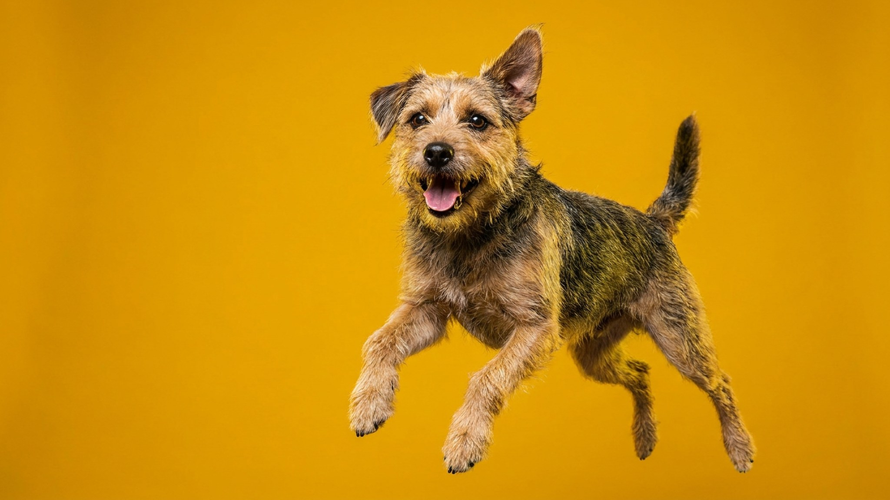

Рука тянется потрепать собаку по голове — это кажется дружеским жестом. Для собаки это часто выглядит иначе: крупный объект нависает сверху и приближается. Именно поэтому даже спокойная собака замирает или отворачивается при поглаживании сверху. Ниже — карта прикосновений, тест на согласие за 3 секунды и правила для детей и незнакомых собак.
🐾 У вашей собаки так же?
Расскажите в AnimaLife, как ведёт себя ваш питомец, — приложение объяснит причину и даст пошаговый план. Бесплатно, без записи к специалисту.
Разобрать свой случай → Разобрать в MAX →
У вас iPhone? AnimaLife есть в App Store
У большинства собак есть зоны, прикосновения к которым приятны, и зоны, где они терпят только от близких людей — или не терпят вовсе. Это не индивидуальная причуда, а видовая закономерность.
Нравится большинству собак:
Большинству неприятно или тревожно:
Погладили собаку 2–3 секунды — остановитесь и уберите руку. Дальше смотрите на реакцию.
Этот тест работает и с собственной собакой, и с чужой. Три секунды — достаточно, чтобы получить честный ответ.
Собака не всегда рычит или уходит — чаще сигналы тоньше. Если видите хотя бы один из них во время поглаживания, остановитесь.
Если собака подаёт эти сигналы регулярно при прикосновениях к определённой зоне — это повод обсудить с ветеринаром: иногда за чувствительностью стоит физический дискомфорт.
Большинство укусов незнакомых собак происходит именно при попытке погладить «хорошую» собаку, которая «вроде не против». Три шага, которые снижают риск.
Дети тянутся гладить собак сверху и по морде — это инстинктивно, но опасно. Объясните просто: «Сначала дай понюхать руку снизу. Потом погладь по боку или груди. Если собака отходит — она говорит "не сейчас", и мы слушаемся». Это правило работает с любой собакой и снижает риск даже при встрече с незнакомым животным.
🐾 Хотите понять, что собака говорит вам?
Опишите ситуацию или пришлите видео в AnimaLife — AI разберёт поведение вашего питомца и подскажет, что делать. Бесплатно, ответ за минуту.
Разобрать поведение → Разобрать в MAX →
У вас iPhone? AnimaLife есть в App Store
🐾 Понравился разбор?
Подпишитесь на канал — каждый день разбираем по одному тревожному симптому у кошек и собак: что в пределах нормы, а когда пора к врачу. Подпишитесь, чтобы не пропустить разбор, который может спасти здоровье вашего питомца.
Материал носит информационный характер и не заменяет очную консультацию ветеринара.